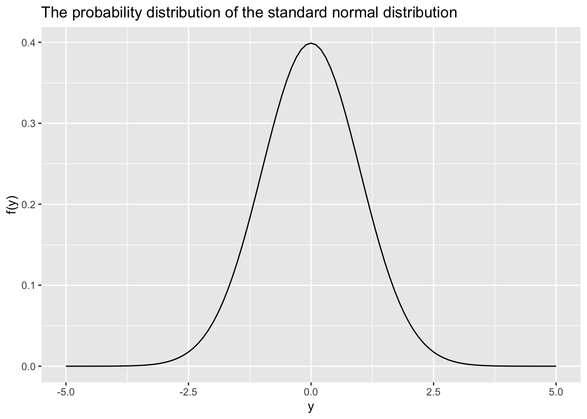
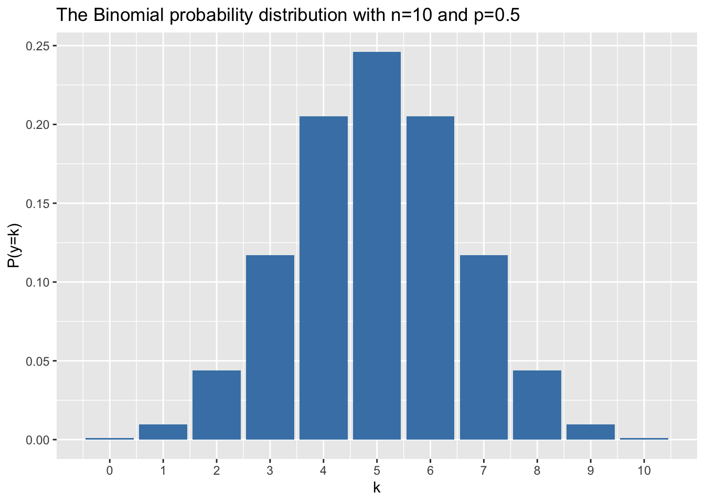
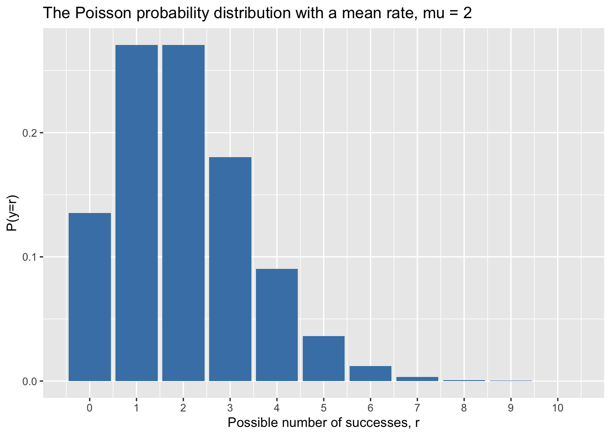

6 Fri Sept 18 (Quiz 1, A1 due) Probability distributions
Frequentist estimation will be moved to the next lecture.
6.2 Probability and probability distributions
Probabilities satisfy Kolmogorov’s properties. Probabilities can be interpreted as the relative frequency of an event, or the ‘degree of belief’ an event will occur.
Bayes’ theorem relates to conditional probability \(P(A|B)\), which is the probability an event \(A\) will occur given and event \(B\). Bayes’ theorem is fundamental to Bayesian statistics.
The definition of independence is that that the probability of events \(A\) and \(B\) occurring can be calculated by multiplying their probabilities: \(P(A,B) = P(A)P(B)\). We may not be justified in using that formula if \(A\) and \(B\) are not independent. We we say that our statistical method assumes that our residuals are independent, we mean that we can multiply the probabilities associated with each residual to calculate the probability of observing these residuals for all the data, i.e., \(P(\epsilon_1, \dots, \epsilon_n) = \prod_{i=1}^n P(\epsilon_i)\). We will specifically show that we are using this assumption when we take the maximum likelihood approach to deriving the residual sum of squares formula (in a future lecture).
6.2.1 Probability distributions for variables
6.2.1.1 The normal (or Gaussian) distribution
The normal distribution arises frequently in statistics. Mathematically, it can be shown that the sum of independent identically distributed random variables are normally distributed, which can be appropriate to model many sources of error. The formula for the normal distribution is,
\[f(y) = \frac{1}{\sqrt{2\pi\sigma^2}}e^{-(y-\mu)^2/2\sigma^2}, \]
where \(y\) is the independent variable, \(f(y)\) is the probability density for a particular \(y\) value, \(\mu\) is the mean and \(\sigma^2\) is the variance.
The standard normal distribution has a mean, \(\mu = 0\), and variance, \(\sigma^2 = 1\). Notationally, we might write the standard normal distribution as \(N(0,1)\) where \(N(\mu,\sigma^2)\) is the normal distribution with a mean of \(\mu\) and variance of \(\sigma^2\).

6.2.1.2 The Binomial distribution
The binomial distribution also frequently occurs in statistics. A coin toss is an example of a Bernoulli trial. The formula for the binomial distribution is,
\[P(y=k) = \frac{n!}{k!(n-k)!}p^k(1-p)^{p-k} \]
where \(k\) is the number of successes for \(n\) Bernoulli trials, each with a probability of success \(p\).
This formula can be executed in R with the commands below. Try cutting and pasting the commands into your R console. To understand the arguments of the dbinom() function read the R help file here.
## k P
## 1 0 0.0009765625
## 2 1 0.0097656250
## 3 2 0.0439453125
## 4 3 0.1171875000
## 5 4 0.2050781250
## 6 5 0.2460937500
## 7 6 0.2050781250
## 8 7 0.1171875000
## 9 8 0.0439453125
## 10 9 0.0097656250
## 11 10 0.0009765625## [1] 1What is \(p\) and \(n\) for this table?
What do you notice about the sum of the probabilities from 0 to \(n\)?
Note that select() is a dplyr function to select a column. I have loaded dplyr in the background. I generally recommend dplyr for data manipulation as it makes easy to read code and used by the best coders in professions related to biological statistics.
We can also make a nice graph of our binomial distribution with \(p = 0.5\) and \(n=10\). (I also loaded ggplot in the background, which is a widely-used package to make publication quality graphics).
ggplot(binom.probs, aes(x = k,y=P)) +
geom_bar(fill = "steelblue", stat = "identity")+
scale_x_continuous(breaks = k)+
ggtitle("The Binomial probability distribution with n=10 and p=0.5")+
ylab("P(y=k)")
From the graph (and the choice to plot it as a bar plot), we can see that the Binomial distribution describes the probability associated with events that are discrete, i.e., 0, 1, 2, etc. success, and the probability of 2.5 successes, or 11 successes when there are only 10 trials is 0. For discrete variables, the probability distribution is a probability mass function. In contrast, the normal distribution corresponds to continuous variables and this type of probability distribution is called a probability density function.
6.2.1.3 The Poisson distribution
The Poisson distribution describes variables representing (typically small) number of occurrences of a particular event, i.e, people kicked by horses. The number of trials is not fixed for the Poisson distribution, and successes (where ‘success’ means a person is kicked by a horse!) occur with a mean rate of \(\mu\). The probability density for the Poisson distribution is,
\[P(y=r) = \frac{e^{-\mu}\mu^r}{r!}, \]
where this distribution can be understood to represent the probability of \(r\) successes occurring during an observational period.

The mean and variance are equal for the Poisson distribution so if count data is over-dispersed we might need to use a negative bionomial distribution instead (which specifies the variance as a parameter)
6.2.2 Probability distributions for statistics
See Figure 2.1 in Quinn and Kenough (or do an internet search) to see the graphs of these distributions: - \(z\) (standard normal); - Student’s \(t\) (ratio of the difference between the sample statistic and its population value to the sample standard deviation); - \(\chi^2\) (square of values from a standard normal distribution; used for interval estimation of variances); and -\(F\) (ratio of two independent \(\chi^2\) variables, each divided by its degrees of freedom (df); used for comparing variances).
(Based on 2.2 of Quinn and Keough. See also - Ch6.2: Probability distributions - notation)
6.3 Empirical frequency distributions
(see also Ch6.1: Empirical frequency distributions)
6.4 Comparing observations to probability distributions (Ch6.3)
(based on Ch6.3: Comparing observed distributions to probability models)